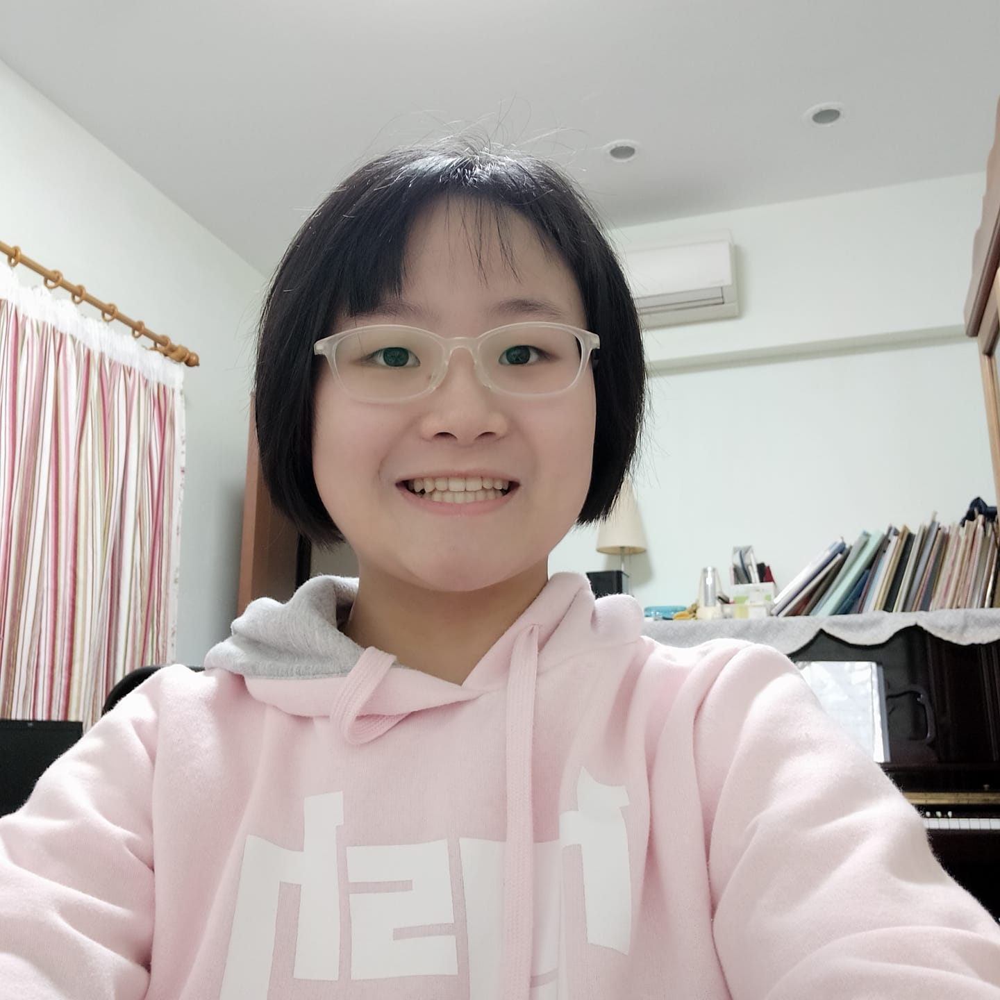
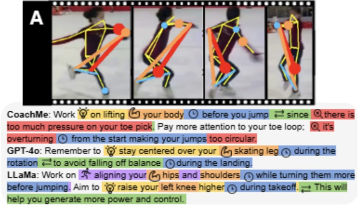
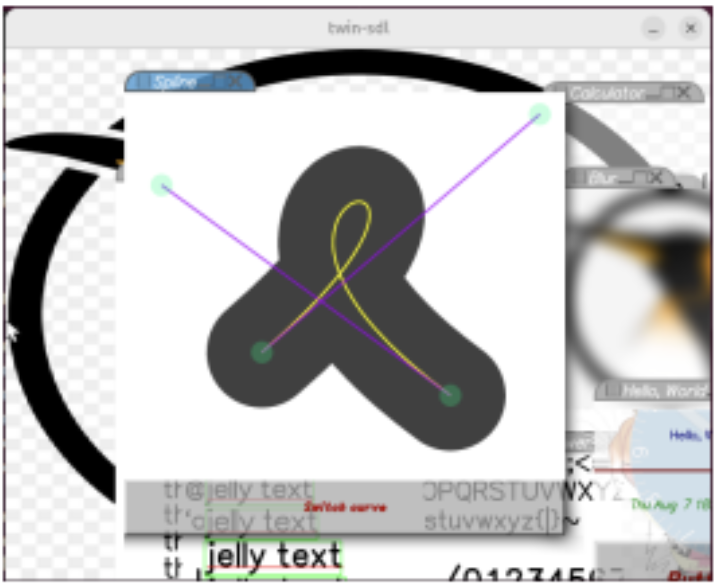
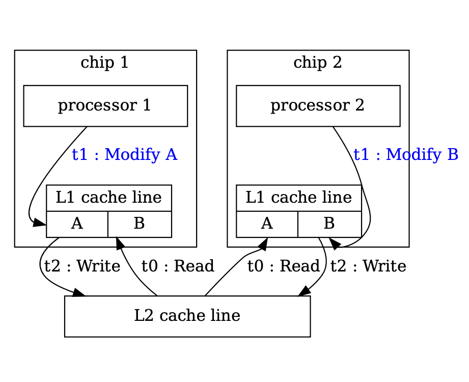
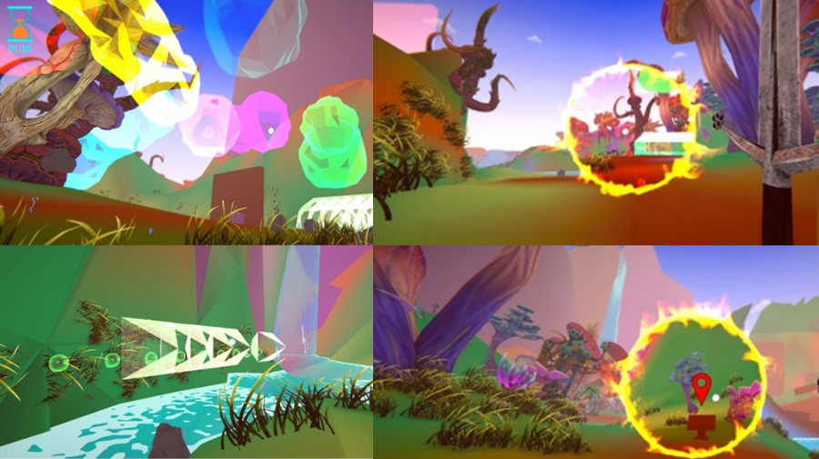
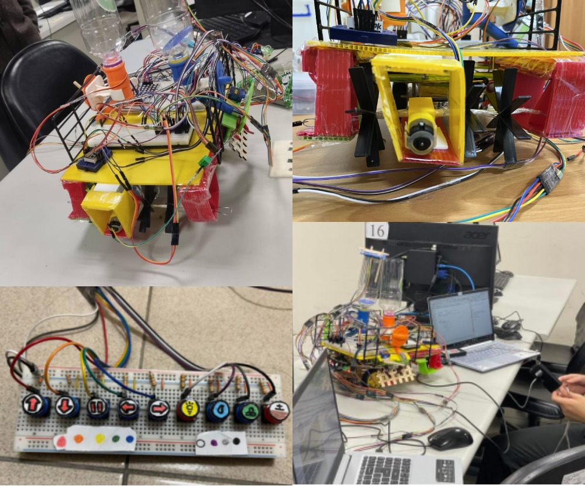

Hi, I'm a master's student in the Department of Computer Science and Information Engineering at National Taiwan University (NTU).
My research interests lie at the intersection of computer graphics and natural language processing. Currently, I work with Prof. Bing-Yu Chen at the Communication and Multimedia Lab, researching SVG and text-to-image generation.



